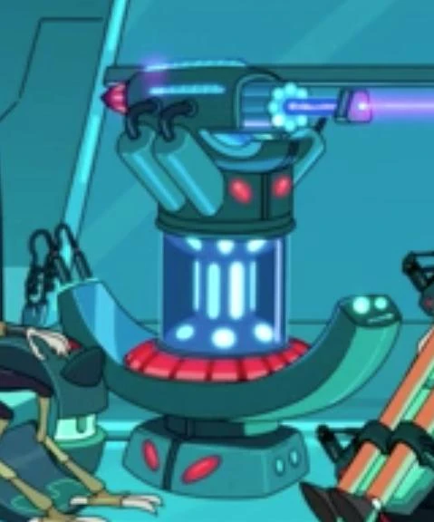
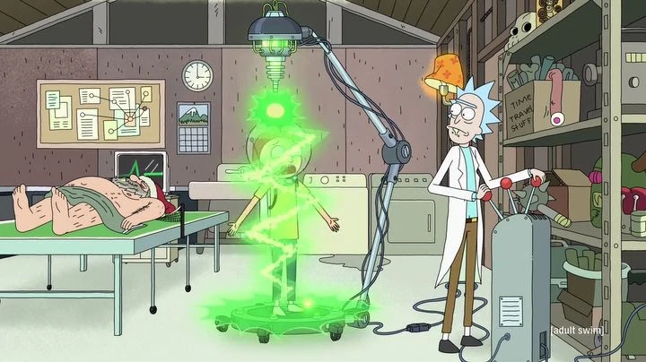

Основные персонажи
Рик Санчес

Один из главных героев шоу, чьё имя упомянуто в его названии.
Он — учёный гений, страдающий алкоголизмом, также очень опрометчив, социопат , чьё поведение заставляет нервничать свою дочь по поводу безопасности её сына, Морти.
Крайне циничен, ворчлив, эгоистичен но не лишен чувства юмора.
Морти Смит
Один из двух главных героев шоу. Внук Рика Санчеса, мальчик 14 лет, с небольшой задержкой в развитии и постоянным чувством беспокойства. Морти учится в средней школе Гарри Херпсона вместе со своей старшей сестрой, Саммер.
Саммер Смит

Старшая сестра Морти, 17 лет. Типичная девочка-подросток, считающая свою семейную жизнь неблагополучной.
Во последних сезонах пытается втерется в доверие Рику, чтобы Морти завидовал сестре
Бет Смит
Дочь Рика, мать Морти и жена Джерри. 34 года. Работает кардиохирургом-ветеринаром — преимущественно лошадиным. Имеет проблемы с алкоголем, считает себя неполноценной.
Джерри Смит
Ричард Джеральд "Джерри" Смит Отец Морти, муж Бетти. Наивный и глупый человек с кучей комплексов. Работает во второсортном рекламном агентстве,
из-за чего часто сидит без работы. Поклонник фильма "Титаник" .Второстепенные персонажи
Трэйси Марроу
Знаменитый рэпер с Земли, на самом деле являющийся нестареющим блуждающим пришельцем из времен под названием Water-T .
Абрадольф Линклер
Результат эксперимента в эпизоде "Ricksy Business". Был создан, когда Рик попытался создать идеального лидера путем скрещивания ДНКАвраама Линкольна и Адольфа Гитлера .
Брэд
Ученик Гарри Херпсонской1634 старшей школы, парень Джессики.
Список объектов (термины)
- Брейналайзер
- Устройство, которое использовал Корнвелиус Дэниел, чтобы извлечь из мозга Рика Санчеза формулу путешествий во времени .
- Коробка с Мисиксами
- Коробка для создания Мисиксов
- В одной из серий появился альтернативная версия этой коробки - коробка с Фрисиксами
- Мегадеревья
- Это вид деревьев, растущих в Измерении 35-C. Они были показаны в эпизоде
«Пилот» и в эпизоде «Сказки из Цитадели»
. - Портальная пушка
-
Была сделана Риком Санчезом после создания обычной портальной пушки. Благодаря ей её владелец мог перемещаться в другие измерения а так же в пространстве на неограниченное расстояние. Технология уникальна, данной технологией владеют только Рики. - Из-за данного устройства Рик Санчез потерял свою жену и дочу...
- Уменьшающий луч
- Сложное устройство, способное уменьшить человека до микроскопических размеров, впервые показано в серии «Анатомический парк».
- 
- 